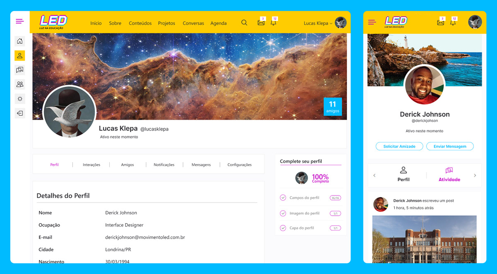

About The Client:
Rede Globo, also known as Globo, is the largest and most influential television network in Brazil, with a reach of over 99% of the country's households. In addition to its extensive programming, Rede Globo is also known for its commitment to promoting social projects. Movimento LED is a project by Rede Globo that aims to support and fund innovative education initiatives in Brazil. The program awards grants to individuals and organizations who have developed educational projects that have the potential to make a significant impact on their communities. The goal of Movimento LED is to promote access to quality education for all Brazilians and to help bridge the educational gap between different regions of the country.
The platform highlights successful education projects that have been awarded funding through the Movimento LED program. These projects have been identified as having the potential to make a significant impact and be replicated in other communities. Users can browse and learn more about these innovative initiatives.
LED Community allows users to fully customize their profiles. Users can upload a profile picture, add a bio, and list their interests and skills.

Also it allows users to post text, photos, videos, GIFs and create surveys to share with the community, on a user-friendly timeline. Keeping everyone updated and engaged with your projects and ideas.
We offer a discussion panel where users can engage in meaningful conversations by theme, fostering collaboration among the education community.
A valuable tool that connects educators, students, and organizations, encouraging knowledge sharing to improve education in Brazil. It's a game changer for the education sector.